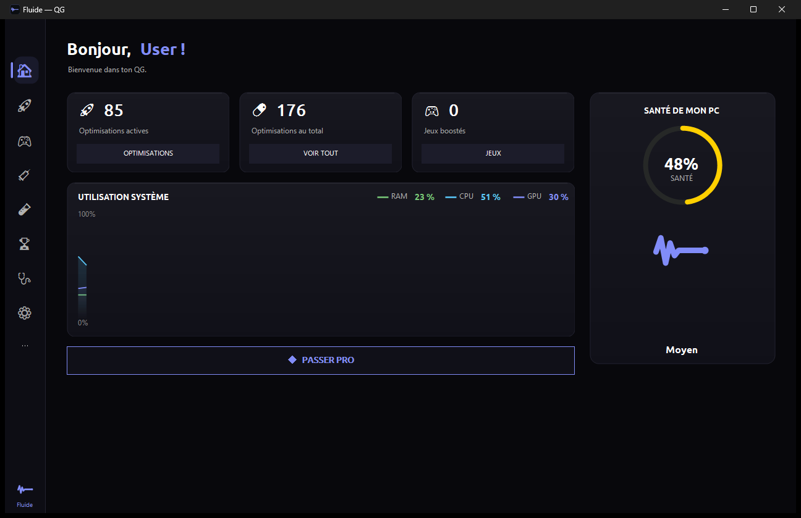

<title>ONYX — Optimiseur PC gamer Windows : FPS et latence mesurés</title>
<meta charset="utf-8">
<meta name="viewport" content="width=device-width, initial-scale=1">
<meta name="description" content="ONYX : 176 optimisations gaming réversibles pour Windows 10/11 + diagnostic complet (santé /100, FPS, latence). Aucune injection, compatible anticheat. Gratuit — Pro 49 €/an ou 127 € à vie.">
<meta property="og:title" content="ONYX — l'optimiseur gaming qui mesure au lieu de promettre">
<meta property="og:description" content="176 optimisations réversibles + diagnostic complet. Zéro injection, compatible anticheat. Gratuit ; Pro 49 €/an ou 127 € à vie.">
<meta property="og:type" content="website">
<meta property="og:image" content="app.png">
<meta name="twitter:card" content="summary_large_image">
<link rel="icon" href="data:image/svg+xml,%3Csvg xmlns='http://www.w3.org/2000/svg' viewBox='0 0 32 32'%3E%3Crect width='32' height='32' rx='7' fill='%230B0E11'/%3E%3Cpath d='M5 17 7.5 10.5 10 22 12.5 13.5 15 18.5 17.5 16 26 16' fill='none' stroke='%23818CF8' stroke-width='2.6' stroke-linecap='round' stroke-linejoin='round'/%3E%3Ccircle cx='26' cy='16' r='2' fill='%23818CF8'/%3E%3C/svg%3E">
<script type="application/ld+json">
{"@context":"https://schema.org","@type":"SoftwareApplication","name":"ONYX","operatingSystem":"Windows 10, Windows 11","applicationCategory":"UtilitiesApplication","softwareVersion":"14.86","dateModified":"2026-07-25","inLanguage":"fr","description":"Optimiseur PC gamer pour Windows 10/11 : 176 optimisations réversibles, mesure de FPS et de latence en direct, diagnostic complet (crashs, réseau, disque) et assistant IA local. Aucune injection, compatible anticheat.","featureList":["176 optimisations Windows réversibles","Bilan de santé /100 (crashs, thermique, réseau, disque)","Mesure des FPS en direct (façon PresentMon)","Latence DPC/ISR (façon LatencyMon)","Analyse de la cause exacte des crashs via les journaux Windows","Suite réseau : gigue, traceroute, DNS, réglages TCP/IP","Assistant IA local optionnel (Copilote, 100 % sur la machine via Ollama)","Sauvegarde du registre et point de restauration avant chaque changement"],"author":{"@type":"Organization","name":"ONYX"},"publisher":{"@type":"Organization","name":"ONYX"},"offers":[{"@type":"Offer","name":"Gratuit","price":"0","priceCurrency":"EUR"},{"@type":"Offer","name":"Pro Annuel","price":"49","priceCurrency":"EUR"},{"@type":"Offer","name":"Pro à Vie","price":"127","priceCurrency":"EUR"}]}
</script>
<script type="application/ld+json">
{"@context":"https://schema.org","@type":"FAQPage","inLanguage":"fr","mainEntity":[{"@type":"Question","name":"ONYX est-il compatible avec les anticheats (Valorant, Faceit…) ?","acceptedAnswer":{"@type":"Answer","text":"Oui. ONYX n'utilise aucune injection ni pilote noyau : il applique uniquement des réglages Windows officiels et documentés, et refuse volontairement toute fonction qui exigerait d'injecter du code dans les jeux."}},{"@type":"Question","name":"Qu'est-ce qui est gratuit dans ONYX, et qu'est-ce qui est payant (Pro) ?","acceptedAnswer":{"@type":"Answer","text":"Gratuit : les 176 optimisations en manuel, le bilan de santé /100, tout le diagnostic (FPS, latence, crashs, réseau, disque), les sauvegardes et la restauration. Pro : le 1-clic adapté au matériel, les presets eSport/Benchmark, le mode jeu automatique, les boosters dynamiques et la surveillance en fond."}},{"@type":"Question","name":"L'assistant IA (Copilote) d'ONYX envoie-t-il mes données ?","acceptedAnswer":{"@type":"Answer","text":"Les mesures et réparations sont 100 % locales. L'assistant IA est optionnel : le modèle tourne sur votre PC (gratuit, via Ollama) et sa mémoire reste dans des fichiers locaux effaçables. Si vous activez la recherche web (facultative et désactivable), seule votre requête est envoyée à DuckDuckGo pour l'actualité."}},{"@type":"Question","name":"Pourquoi Windows affiche « éditeur inconnu » à l'installation d'ONYX ?","acceptedAnswer":{"@type":"Answer","text":"L'application est éditée par un développeur indépendant et n'est pas encore signée (le certificat arrive avec les premières ventes). Cliquez « Informations complémentaires » puis « Exécuter quand même ». Tout est réversible, avec sauvegarde automatique avant chaque modification."}},{"@type":"Question","name":"Comment activer la version Pro d'ONYX après l'achat ?","acceptedAnswer":{"@type":"Answer","text":"Vous recevez par email sous 24 h une clé signée à votre nom, à coller dans l'app (menu → « Activer la version Pro »). La licence à vie est valable pour toujours ; l'abonnement est renouvelé à chaque échéance. L'activation fonctionne sans compte ni serveur."}},{"@type":"Question","name":"Peut-on essayer ONYX Pro gratuitement ?","acceptedAnswer":{"@type":"Answer","text":"Oui : ONYX inclut un essai Pro gratuit de 7 jours sans carte bancaire, et chaque réglage se rétablit d'un clic, y compris « tout rétablir » d'un coup."}}]}
</script>
<style>
  :root {
    --bg: #0B0A09;
    --panel: #16130F;
    --panel-2: #1C1712;
    --line: rgba(255,255,255,0.08);
    --line-strong: rgba(255,255,255,0.14);
    --ink: #E7DFCE;
    --ink-dim: #AFA694;
    --ink-faint: #837B6B;
    --signal: #E3B75C;
    --signal-deep: #B08B46;
    --before: #8FA0C0;
    --grid: rgba(227,183,92,0.06);
    --scale: clamp(1rem, 0.9rem + 0.4vw, 1.125rem);
    --h1: clamp(2.5rem, 1.4rem + 5vw, 5rem);
    --h2: clamp(1.7rem, 1.1rem + 2.4vw, 2.7rem);
    --sans: "Segoe UI Variable Display","Segoe UI",system-ui,-apple-system,"Helvetica Neue",Arial,sans-serif;
    --mono: "Cascadia Code","SFMono-Regular","SF Mono",Consolas,"Liberation Mono",monospace;
    --maxw: 1120px;
  }
  @media (prefers-color-scheme: light) {
    :root {
      --bg: #F5F2EB; --panel: #FFFFFF; --panel-2: #FAF8F3;
      --line: rgba(28,22,14,0.10); --line-strong: rgba(28,22,14,0.16);
      --ink: #1D1812; --ink-dim: #5E5649; --ink-faint: #8D8476;
      --signal: #9E7431; --signal-deep: #7A5A26; --before: #5C6E96;
      --grid: rgba(158,116,49,0.08);
    }
  }
  :root[data-theme="dark"] {
    --bg:#0B0A09;--panel:#16130F;--panel-2:#1C1712;--line:rgba(255,255,255,0.08);--line-strong:rgba(255,255,255,0.14);
    --ink:#E7DFCE;--ink-dim:#AFA694;--ink-faint:#837B6B;--signal:#E3B75C;--signal-deep:#B08B46;--before:#8FA0C0;--grid:rgba(227,183,92,0.06);
  }
  :root[data-theme="light"] {
    --bg:#F5F2EB;--panel:#FFFFFF;--panel-2:#FAF8F3;--line:rgba(28,22,14,0.10);--line-strong:rgba(28,22,14,0.16);
    --ink:#1D1812;--ink-dim:#5E5649;--ink-faint:#8D8476;--signal:#9E7431;--signal-deep:#7A5A26;--before:#5C6E96;--grid:rgba(158,116,49,0.08);
  }

  * { box-sizing: border-box; }
  body {
    margin: 0; background: var(--bg); color: var(--ink);
    font-family: var(--sans); font-size: var(--scale); line-height: 1.6;
    -webkit-font-smoothing: antialiased;
  }
  .wrap { max-width: var(--maxw); margin: 0 auto; padding: 0 24px; }
  a { color: inherit; }
  h1,h2,h3 { text-wrap: balance; letter-spacing: -0.02em; margin: 0; }
  .mono { font-family: var(--mono); }
  .eyebrow {
    font-family: var(--mono); font-size: 0.72rem; letter-spacing: 0.22em;
    text-transform: uppercase; color: var(--signal); margin: 0 0 18px;
  }
  .tnum { font-variant-numeric: tabular-nums; }

  /* nav */
  nav {
    position: sticky; top: 0; z-index: 20;
    backdrop-filter: blur(10px); background: color-mix(in srgb, var(--bg) 78%, transparent);
    border-bottom: 1px solid var(--line);
  }
  .nav-in { display: flex; align-items: center; justify-content: space-between; height: 62px; }
  .brand { display: flex; align-items: center; gap: 11px; font-weight: 700; letter-spacing: -0.01em; }
  .glyph {
    width: 26px; height: 26px; border: 1.5px solid var(--signal); border-radius: 7px;
    display: grid; place-items: center; color: var(--signal); font-family: var(--mono); font-size: 15px;
  }
  .nav-links { display: flex; align-items: center; gap: 26px; }
  .nav-links a { color: var(--ink-dim); text-decoration: none; font-size: 0.92rem; }
  .nav-links a:hover { color: var(--ink); }
  .btn {
    display: inline-flex; align-items: center; gap: 8px; justify-content: center;
    font-family: var(--sans); font-weight: 600; font-size: 0.95rem;
    padding: 11px 20px; border-radius: 9px; text-decoration: none; cursor: pointer;
    border: 1px solid transparent; transition: transform .12s ease, background .15s ease, border-color .15s ease;
  }
  .btn-primary { background: var(--signal); color: #0B0B14; }
  .btn-primary:hover { transform: translateY(-1px); background: color-mix(in srgb, var(--signal) 88%, white); }
  .btn-ghost { border-color: var(--line-strong); color: var(--ink); background: transparent; }
  .btn-ghost:hover { border-color: var(--signal); color: var(--signal); }
  :focus-visible { outline: 2px solid var(--signal); outline-offset: 3px; border-radius: 6px; }

  /* hero */
  .hero { padding: 70px 0 40px; position: relative; }
  .hero-grid { display: grid; grid-template-columns: 1.05fr 1fr; gap: 48px; align-items: center; }
  h1 { font-size: var(--h1); font-weight: 800; line-height: 1.02; }
  h1 .accent { color: var(--signal); }
  .lede { color: var(--ink-dim); max-width: 46ch; margin: 22px 0 30px; font-size: 1.08rem; }
  .cta-row { display: flex; gap: 14px; flex-wrap: wrap; align-items: center; }
  .cta-note { font-family: var(--mono); font-size: 0.75rem; color: var(--ink-faint); }

  /* scope */
  .scope {
    position: relative; border: 1px solid var(--line-strong); border-radius: 16px; overflow: hidden;
    background:
      linear-gradient(var(--grid) 1px, transparent 1px) 0 0 / 100% 28px,
      linear-gradient(90deg, var(--grid) 1px, transparent 1px) 0 0 / 34px 100%,
      var(--panel);
    box-shadow: 0 30px 80px -40px rgba(0,0,0,0.6);
  }
  .scope canvas { display: block; width: 100%; height: 300px; }
  .scope-tag {
    position: absolute; top: 14px; left: 16px; font-family: var(--mono); font-size: 0.7rem;
    letter-spacing: 0.16em; text-transform: uppercase; color: var(--ink-faint);
  }
  .scope-legend { position: absolute; top: 14px; right: 16px; display: flex; gap: 16px; font-family: var(--mono); font-size: 0.7rem; }
  .lg { display: flex; align-items: center; gap: 6px; color: var(--ink-dim); }
  .lg i { width: 16px; height: 3px; border-radius: 2px; display: inline-block; }
  .scope.shot { padding: 0; }
  .scope.shot img { display: block; width: 100%; height: auto; }

  /* faq */
  .faq { max-width: 760px; display: flex; flex-direction: column; gap: 10px; }
  .faq details { border: 1px solid var(--line); border-radius: 12px; background: var(--panel); padding: 0 20px; }
  .faq summary { cursor: pointer; padding: 16px 0; font-weight: 600; list-style: none; }
  .faq summary::-webkit-details-marker { display: none; }
  .faq summary::before { content: "▸ "; color: var(--signal); }
  .faq details[open] summary::before { content: "▾ "; }
  .faq details p { color: var(--ink-dim); margin: 0 0 16px; font-size: 0.94rem; }

  .statbar {
    display: grid; grid-template-columns: repeat(4, 1fr); gap: 1px; margin-top: 26px;
    border: 1px solid var(--line); border-radius: 12px; overflow: hidden; background: var(--line);
  }
  .stat { background: var(--panel); padding: 18px 18px; }
  .stat .k { font-family: var(--mono); font-size: 1.7rem; font-weight: 600; letter-spacing: -0.02em; }
  .stat .k b { color: var(--signal); font-weight: 600; }
  .stat .l { color: var(--ink-dim); font-size: 0.82rem; margin-top: 4px; }

  section { padding: 72px 0; border-top: 1px solid var(--line); }
  .sec-head { max-width: 60ch; margin-bottom: 40px; }
  h2 { font-size: var(--h2); font-weight: 700; }
  .sub { color: var(--ink-dim); margin-top: 14px; }

  /* before/after */
  .ba { display: grid; grid-template-columns: 1fr 1fr; gap: 20px; }
  .ba-card { border: 1px solid var(--line); border-radius: 14px; padding: 24px; background: var(--panel); }
  .ba-card h3 { font-family: var(--mono); font-size: 0.78rem; letter-spacing: 0.14em; text-transform: uppercase; color: var(--ink-faint); font-weight: 500; }
  .ba-row { display: flex; justify-content: space-between; align-items: baseline; padding: 12px 0; border-bottom: 1px dashed var(--line); }
  .ba-row:last-child { border-bottom: 0; }
  .ba-row .name { color: var(--ink-dim); font-size: 0.9rem; }
  .ba-row .val { font-family: var(--mono); font-variant-numeric: tabular-nums; font-size: 1.05rem; }
  .ba-card.after { border-color: color-mix(in srgb, var(--signal) 40%, var(--line)); }
  .ba-card.after .val { color: var(--signal); }

  /* features */
  .feat { display: grid; grid-template-columns: repeat(3, 1fr); gap: 18px; }
  .card {
    border: 1px solid var(--line); border-radius: 14px; padding: 24px; background: var(--panel);
    transition: border-color .15s ease, transform .15s ease;
  }
  .card:hover { border-color: var(--line-strong); transform: translateY(-2px); }
  .card .ix { font-family: var(--mono); font-size: 0.72rem; color: var(--signal); letter-spacing: 0.12em; }
  .card h3 { font-size: 1.12rem; font-weight: 700; margin: 12px 0 8px; }
  .card p { color: var(--ink-dim); font-size: 0.94rem; margin: 0; }

  /* pricing */
  .price { display: grid; grid-template-columns: repeat(3, 1fr); gap: 20px; max-width: 1080px; }
  .plan { border: 1px solid var(--line); border-radius: 16px; padding: 30px; background: var(--panel); display: flex; flex-direction: column; }
  .plan.pro { border-color: color-mix(in srgb, var(--signal) 46%, var(--line)); background: linear-gradient(180deg, color-mix(in srgb, var(--signal) 7%, var(--panel)), var(--panel)); }
  .plan .tier { font-family: var(--mono); text-transform: uppercase; letter-spacing: 0.16em; font-size: 0.72rem; color: var(--ink-dim); }
  .plan.pro .tier { color: var(--signal); }
  .plan .amt { font-size: 2.4rem; font-weight: 800; letter-spacing: -0.03em; margin: 10px 0 2px; }
  .plan .amt small { font-size: 0.9rem; font-weight: 500; color: var(--ink-faint); letter-spacing: 0; }
  .plan ul { list-style: none; padding: 0; margin: 20px 0 26px; display: flex; flex-direction: column; gap: 11px; }
  .plan li { display: flex; gap: 10px; font-size: 0.92rem; color: var(--ink-dim); }
  .plan li::before { content: "▸"; color: var(--signal); }
  .plan .btn { margin-top: auto; }

  /* download */
  .dl { display: grid; grid-template-columns: 1.3fr 1fr; gap: 20px; max-width: 900px; }
  .dl-main, .dl-side { border: 1px solid var(--line); border-radius: 16px; padding: 30px; background: var(--panel); }
  .dl-main { border-color: color-mix(in srgb, var(--signal) 46%, var(--line)); background: linear-gradient(180deg, color-mix(in srgb, var(--signal) 8%, var(--panel)), var(--panel)); }
  .dl-tier { font-family: var(--mono); text-transform: uppercase; letter-spacing: 0.16em; font-size: 0.72rem; color: var(--signal); }
  .dl-title { font-size: 1.5rem; font-weight: 800; letter-spacing: -0.02em; margin: 10px 0 6px; }
  .dl-main > p { color: var(--ink-dim); font-size: 0.95rem; margin: 0 0 22px; }
  .dl-main .btn { width: fit-content; }
  .dl-alt { font-size: 0.86rem; color: var(--ink-faint); margin: 16px 0 0; }
  .dl-alt a { color: var(--signal); text-decoration: none; }
  .dl-alt a:hover { text-decoration: underline; }
  .dl-req { list-style: none; padding: 0; margin: 0 0 18px; display: flex; flex-direction: column; gap: 10px; }
  .dl-req li { display: flex; gap: 10px; font-size: 0.9rem; color: var(--ink-dim); }
  .dl-req li::before { content: "▸"; color: var(--signal); }
  .dl-note { font-size: 0.74rem; color: var(--ink-faint); line-height: 1.55; border-top: 1px solid var(--line); padding-top: 14px; margin: 0; }

  /* disclaimer */
  .note { border: 1px solid var(--line); border-left: 3px solid var(--signal); border-radius: 12px; padding: 22px 24px; background: var(--panel-2); color: var(--ink-dim); font-size: 0.9rem; }
  .note b { color: var(--ink); }

  footer { padding: 40px 0 60px; border-top: 1px solid var(--line); color: var(--ink-faint); font-size: 0.84rem; }
  .foot-in { display: flex; justify-content: space-between; gap: 20px; flex-wrap: wrap; }

  @media (max-width: 860px) {
    .hero-grid { grid-template-columns: 1fr; gap: 34px; }
    .statbar { grid-template-columns: repeat(2,1fr); }
    .ba, .feat, .price, .dl { grid-template-columns: 1fr; }
    .nav-links a:not(.btn) { display: none; }
  }
  @media (prefers-reduced-motion: reduce) { * { animation: none !important; transition: none !important; } }
</style>

<nav>
  <div class="wrap nav-in">
    <div class="brand"><span class="glyph"><svg width="16" height="16" viewBox="0 0 32 32" aria-hidden="true"><circle cx="16" cy="16" r="13" fill="none" stroke="currentColor" stroke-width="2.4"/><path d="M7 17 9.5 11.5 12 21 14.5 13.5 16.5 18 18.5 16 24 16" fill="none" stroke="currentColor" stroke-width="2.4" stroke-linecap="round" stroke-linejoin="round"/><circle cx="24" cy="16" r="2" fill="currentColor"/></svg></span> ONYX</div>
    <div class="nav-links">
      <a href="#mesure">Mesure</a>
      <a href="#fonctions">Fonctions</a>
      <a href="#tarifs">Tarifs</a>
      <a href="#faq">FAQ</a>
      <a class="btn btn-primary" href="#telecharger">Télécharger</a>
    </div>
  </div>
</nav>

<header class="hero">
  <div class="wrap hero-grid">
    <div>
      <p class="eyebrow">Mesuré, pas promis</p>
      <h1>Ton PC de jeu, <span class="accent">optimisé</span> — et surtout <span class="accent">diagnostiqué</span>.</h1>
      <p class="lede">176 optimisations réversibles <em>plus</em> une suite de diagnostic complète : pourquoi ça crashe, ça rame ou ça lag — avec un verdict et le bon outil pour chaque symptôme. Bouton <b>⚡ TOUT OPTIMISER</b> en un clic, et la preuve chiffrée avant/après.</p>
      <div class="cta-row">
        <a class="btn btn-primary" href="#telecharger">Télécharger gratuitement</a>
        <a class="btn btn-ghost" href="#fonctions">Voir la suite</a>
        <span class="cta-note">Windows 10/11 · réversible · aucune injection · sauvegarde auto</span>
      </div>
    </div>

    <div class="scope shot">
      <!-- Capture réelle générée par le harnais (BT_UITEST + BT_UISHOT) — à rafraîchir à chaque
           évolution visuelle : copier shots/p0-Dashboard-1280x800.png vers app.png (landing + site). -->
      
    </div>
  </div>

  <div class="wrap">
    <div class="statbar tnum">
      <div class="stat"><div class="k">176</div><div class="l">optimisations réversibles</div></div>
      <div class="stat"><div class="k">30<b>+</b></div><div class="l">panneaux de diagnostic</div></div>
      <div class="stat"><div class="k">39</div><div class="l">outils reliés, en 1 clic</div></div>
      <div class="stat"><div class="k"><b>1</b>-clic</div><div class="l">tout optimiser · tout rétablir</div></div>
    </div>
  </div>
</header>

<section id="mesure">
  <div class="wrap">
    <div class="sec-head">
      <p class="eyebrow">Avant / Après</p>
      <h2>Le seul optimiseur qui te montre ses preuves.</h2>
      <p class="sub">Capture ETW intégrée (WPR + xperf) et test de gigue temps réel. Applique un profil, relance la mesure, compare. Exemple relevé sur une machine de test — tes chiffres dépendent de ton matériel.</p>
    </div>
    <div class="ba">
      <div class="ba-card before">
        <h3>Avant réglages</h3>
        <div class="ba-row"><span class="name">Résolution du timer</span><span class="val">15.6 ms</span></div>
        <div class="ba-row"><span class="name">Gigue Sleep(1) — pire cas</span><span class="val">3.9 ms</span></div>
        <div class="ba-row"><span class="name">Pire latence DPC pilote</span><span class="val">512 µs</span></div>
        <div class="ba-row"><span class="name">Verdict</span><span class="val">à surveiller</span></div>
      </div>
      <div class="ba-card after">
        <h3>Après réglages</h3>
        <div class="ba-row"><span class="name">Résolution du timer</span><span class="val">0.5 ms</span></div>
        <div class="ba-row"><span class="name">Gigue Sleep(1) — pire cas</span><span class="val">1.7 ms</span></div>
        <div class="ba-row"><span class="name">Pire latence DPC pilote</span><span class="val">128 µs</span></div>
        <div class="ba-row"><span class="name">Verdict</span><span class="val">excellent</span></div>
      </div>
    </div>
  </div>
</section>

<section id="fonctions">
  <div class="wrap">
    <div class="sec-head">
      <p class="eyebrow">Ce qu'il fait</p>
      <h2>Un atelier de réglage <em>et</em> de diagnostic complet.</h2>
      <p class="sub">Deux portes d'entrée — un bilan santé /100 et un assistant « J'ai un problème… » — puis 30+ panneaux rangés par thème. Chaque symptôme a son verdict <em>et</em> le bon outil, installable en un clic depuis le panneau.</p>
    </div>
    <div class="feat">
      <div class="card"><div class="ix">01 · EN 1 CLIC</div><h3>⚡ Tout optimiser</h3><p>176 optimisations réversibles ; le bouton unique détecte ton matériel (SSD/HDD, GPU, RAM, écran) et coche la meilleure sélection — sauvegarde .reg + point de restauration automatiques.</p></div>
      <div class="card"><div class="ix">02 · DIAGNOSTIC</div><h3>🏥 Santé /100</h3><p>Un bilan global agrégeant crashs, thermique, réseau, disque et réglages néfastes, avec graphique de tendance et accès direct au panneau qui corrige chaque point.</p></div>
      <div class="card"><div class="ix">03 · CRASHS</div><h3>🩺 Pourquoi ça plante</h3><p>Lit les journaux Windows (crashs, pilote GPU, écrans bleus), détecte le throttling thermique et le « dispositif de rendu perdu », et annule les réglages néfastes laissés par d'autres « optimiseurs ».</p></div>
      <div class="card"><div class="ix">04 · RÉSEAU</div><h3>📡 Suite complète</h3><p>Qualité (gigue/perte, chez toi ou le FAI ?), traceroute, réglages TCP/IP qui débloquent les téléchargements, carte réseau basse latence et DNS benchmarké.</p></div>
      <div class="card"><div class="ix">05 · MESURE</div><h3>📈 La preuve chiffrée</h3><p>FPS en direct façon PresentMon, latence DPC/ISR façon LatencyMon, benchmark CPU/mémoire/disque. Et les outils de référence (HWiNFO, GPU-Z, OCCT, CapFrameX, Process Lasso…) s'installent en un clic depuis le panneau concerné.</p></div>
      <div class="card"><div class="ix">06 · SÛR</div><h3>🔒 Honnête par conception</h3><p>Aucune injection (compatible anticheat), tout réversible, aucun « faux tweak » dangereux. Un panneau annule même les dégâts des mauvais outils.</p></div>
    </div>
  </div>
</section>

<section id="telecharger">
  <div class="wrap">
    <div class="sec-head">
      <p class="eyebrow">Téléchargement</p>
      <h2>Prête à installer — <em>sans aucun prérequis</em>.</h2>
      <p class="sub">Un seul fichier, Windows 10 ou 11 (64 bits). Tout est réversible : une sauvegarde du registre et un point de restauration sont créés avant toute modification.</p>
    </div>
    <div class="dl">
      <div class="dl-main">
        <div class="dl-tier">Édition autonome · recommandée</div>
        <!-- Garder synchronisé avec la version de l'assembly (src/Program.cs) et le nom
             de l'installateur — 2 occurrences dans cette page (ici + pied de page). -->
        <div class="dl-title">ONYX Setup <span class="mono">v14.57</span></div>
        <p>Runtime .NET inclus : s'installe et démarre sans rien installer d'autre. Environ 37 Mo.</p>
        <!-- Produit Gumroad « gratuit » (0 €) : héberge l'installateur ET capture l'email des
             utilisateurs gratuits. Permaliens à créer tels quels — voir marketing/PLAN-LANCEMENT.md, étape 2. -->
        <a class="btn btn-primary" href="https://fluide.gumroad.com/l/gratuit">⬇ Télécharger (.exe · 64 bits)</a>
        <p class="dl-alt">PC déjà équipé du .NET Desktop 10 ? <a href="https://fluide.gumroad.com/l/gratuit">Version légère (~6 Mo)</a> — jointe au même téléchargement.</p>
      </div>
      <div class="dl-side">
        <ul class="dl-req">
          <li>Windows 10 / 11 · x64</li>
          <li>Droits administrateur (pour appliquer les réglages)</li>
          <li>~120 Mo une fois installé · désinstallation propre</li>
          <li>Aucune injection · compatible anticheat</li>
        </ul>
        <p class="dl-note">Au 1<sup>er</sup> lancement, Windows peut afficher « éditeur inconnu » → « Informations complémentaires » → « Exécuter quand même ». La signature de code est en cours.</p>
      </div>
    </div>
  </div>
</section>

<section id="tarifs">
  <div class="wrap">
    <div class="sec-head">
      <p class="eyebrow">Tarifs</p>
      <h2>Gratuit pour régler. Pro pour automatiser.</h2>
    </div>
    <div class="price">
      <div class="plan">
        <span class="tier">Gratuit</span>
        <div class="amt">0 €</div>
        <ul>
          <li>Les 176 optimisations en manuel</li>
          <li>Bilan santé /100 &amp; assistant « J'ai un problème… »</li>
          <li>Toute la suite de diagnostic (crashs, réseau, disque…)</li>
          <li>Mesure FPS / latence &amp; moniteur matériel</li>
          <li>Sauvegarde .reg + point de restauration · tout rétablir</li>
        </ul>
        <a class="btn btn-ghost" href="#telecharger">Télécharger</a>
      </div>
      <div class="plan">
        <span class="tier">Pro Annuel</span>
        <div class="amt">49 € <small>/ an — soit 4,08 €/mois</small></div>
        <ul>
          <li>⚡ TOUT OPTIMISER : 1 clic adapté au matériel</li>
          <li>Presets eSport &amp; Benchmark · MODE JEU auto</li>
          <li>Overclock GPU + profil pilote NVIDIA</li>
          <li>Gardien de démarrage &amp; surveillance en fond</li>
          <li>DNS rapide &amp; réglages réseau avancés</li>
        </ul>
        <a class="btn btn-ghost" href="https://fluide.gumroad.com/l/annuel">Choisir l'Annuel</a>
      </div>
      <div class="plan pro">
        <span class="tier">Pro à Vie</span>
        <div class="amt">127 € <small>/ une seule fois</small></div>
        <ul>
          <li>Tout le Pro Annuel, pour toujours</li>
          <li>Payé une fois — jamais d'abonnement</li>
          <li>Toutes les mises à jour futures incluses</li>
          <li>Clé signée à ton nom, 100 % hors-ligne</li>
          <li>Moins cher que 3 ans d'abonnement</li>
        </ul>
        <a class="btn btn-primary" href="https://fluide.gumroad.com/l/pro">Passer Pro à vie</a>
      </div>
    </div>
    <p class="sub" style="max-width:680px; margin:22px auto 0; text-align:center;">
      15&nbsp;% sous le marché : le même service se vend ailleurs 59&nbsp;€/an ou 150&nbsp;€
      l'accès à vie — avec une édition gratuite limitée à une poignée de réglages. Ici :
      49&nbsp;€/an ou 127&nbsp;€ une seule fois, et les 176 optimisations restent gratuites.
    </p>
  </div>
</section>

<section id="faq">
  <div class="wrap">
    <div class="sec-head">
      <p class="eyebrow">FAQ</p>
      <h2>Les questions qu'on me pose vraiment.</h2>
    </div>
    <div class="faq">
      <details>
        <summary>Windows affiche « éditeur inconnu » — c'est normal ?</summary>
        <p>Oui : je suis un développeur indépendant et l'application n'est pas encore signée
        (le certificat arrive avec les premières ventes). Clique « Informations complémentaires »
        puis « Exécuter quand même ». Tout ce que fait l'app est réversible, avec sauvegarde
        automatique avant chaque modification.</p>
      </details>
      <details>
        <summary>C'est compatible avec les anticheats (Valorant, Faceit…) ?</summary>
        <p>L'app n'utilise aucune injection ni pilote noyau : elle applique des réglages Windows
        officiels et documentés — c'est un choix de conception. Elle refuse volontairement les
        fonctions qui exigeraient d'injecter du code dans les jeux.</p>
      </details>
      <details>
        <summary>Qu'est-ce qui est gratuit, et qu'est-ce qui est Pro ?</summary>
        <p>Gratuit : les 176 optimisations en manuel, le bilan santé /100, tout le diagnostic
        (FPS, latence, crashs, réseau, disque), les sauvegardes et la restauration. Pro : le
        1-clic adapté au matériel, les presets eSport/Benchmark, le MODE JEU auto, les boosters
        dynamiques et la surveillance en fond.</p>
      </details>
      <details>
        <summary>Comment je reçois ma clé après l'achat ?</summary>
        <p>Par email sous 24 h — une clé signée à ton nom, à coller dans l'app (menu ☰ →
        « Activer la version Pro »). Licence à vie : valable pour toujours. Abonnement : clé
        renouvelée à chaque échéance. L'activation fonctionne sans compte ni serveur.</p>
      </details>
      <details>
        <summary>L'assistant IA (Copilote) envoie-t-il mes données ?</summary>
        <p>Les mesures et réparations sont 100 % locales. L'assistant IA est optionnel : le modèle
        tourne sur ton PC (gratuit, via Ollama) et la mémoire reste dans des fichiers locaux,
        effaçables. Si tu actives la recherche web (facultative, désactivable), seule ta requête
        est envoyée à un moteur de recherche (DuckDuckGo) pour l'actualité — évite d'y taper des
        infos sensibles.</p>
      </details>
      <details>
        <summary>Et si je change d'avis ?</summary>
        <p>Essaie avant d'acheter : l'app inclut un essai Pro gratuit de 7 jours, sans carte
        bancaire. Et chaque réglage se rétablit d'un clic — y compris « tout rétablir » d'un
        coup.</p>
      </details>
    </div>
  </div>
</section>

<section>
  <div class="wrap">
    <div class="note">
      <b>Transparence.</b> Chaque modification est réversible et une sauvegarde du registre est créée avant application. Les options qui réduisent une protection de sécurité (mitigations Spectre/Meltdown, intégrité de la mémoire) ou qui overclockent le matériel ne sont <b>jamais</b> appliquées automatiquement — elles restent un choix explicite. Logiciel fourni sans garantie, à utiliser à vos risques. <b>Non affilié</b> à Microsoft, NVIDIA, AMD ou Intel ; les marques citées appartiennent à leurs propriétaires.
    </div>
  </div>
</section>

<footer>
  <div class="wrap foot-in">
    <div>© ONYX — Optimiseur &amp; diagnostic gaming pour Windows.</div>
    <div class="mono">v14.57 · Windows 10/11 · x64</div>
  </div>
</footer>

<script>
(function () {
  var c = document.getElementById('scope');
  if (!c || !c.getContext) return;
  var reduce = window.matchMedia && window.matchMedia('(prefers-reduced-motion: reduce)').matches;
  var ctx = c.getContext('2d');
  function css(v){ return getComputedStyle(document.documentElement).getPropertyValue(v).trim(); }

  function resize() {
    var r = c.getBoundingClientRect();
    var dpr = Math.min(window.devicePixelRatio || 1, 2);
    c.width = Math.max(320, r.width) * dpr;
    c.height = 300 * dpr;
    ctx.setTransform(dpr, 0, 0, dpr, 0, 0);
  }
  resize();
  window.addEventListener('resize', resize);

  // pseudo-random but deterministic jitter
  function noise(i, s){ return Math.sin(i*12.9898 + s)*43758.5453 % 1; }

  var t = 0;
  function trace(amp, spike, color, width, phase, smooth) {
    var w = c.clientWidth || 600, h = 300, mid = h * 0.52;
    ctx.beginPath();
    ctx.lineWidth = width;
    ctx.strokeStyle = color;
    ctx.globalAlpha = 0.95;
    for (var x = 0; x <= w; x += 3) {
      var i = x * 0.05 + phase;
      var base = Math.sin(i*0.7 + t*0.6) * amp * 0.4;
      var j = (noise(Math.floor(i*2), phase) - 0.5) * amp * smooth;
      var sp = 0;
      var spk = Math.sin(i*0.13 + t*0.3 + phase);
      if (spike > 0 && spk > 0.86) sp = -(spk-0.86) * spike * 7;
      var y = mid + base + j + sp;
      if (x === 0) ctx.moveTo(x, y); else ctx.lineTo(x, y);
    }
    ctx.stroke();
    ctx.globalAlpha = 1;
  }

  function frame() {
    var w = c.clientWidth || 600, h = 300;
    ctx.clearRect(0, 0, w, h);
    trace(26, 34, css('--before'), 1.6, 10, 0.9);   // avant : jagged + spikes
    trace(16, 0, css('--signal'), 2, 40, 0.15);      // apres : smooth
    if (!reduce) { t += 0.05; requestAnimationFrame(frame); }
  }
  frame();
})();
</script>
